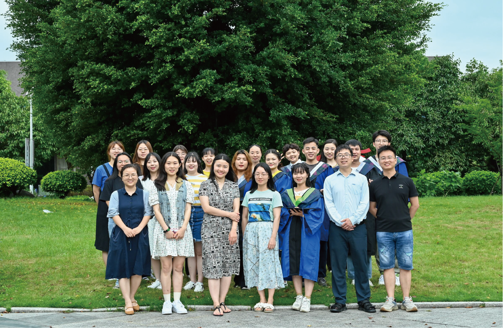

Our research interests focus on dissecting the molecular mechanisms of plant light signaling transduction and circadian clock system. We use the model plant species, Arabidopsis, to identify the key components in blue light photoreceptor Cryptochrome signaling pathways and study their functions. We also investigate the mechanisms by which light signaling regulates circadian clock system, with the final goal to uncover the unknow molecular mechanisms that light and circadian clock control the plant growth and its adaptation to the ever-changing environment. Another research topic in our group is to study the molecular mechanism of flowering in bamboo. By using our bamboo gene resources and genetic transformation system, we work on homologous cloning of bamboo flowering genes and analyzing their functions both in model plant species (like Arabidopsis and rice) and bamboo itself, with the aim of depicting the basic molecular regulatory network of flowering in bamboo.
版权所有：蛋白组学研究中心 电话:0591-86392267
地址：中国 福建省 福州市 仓山区 上下店路15号